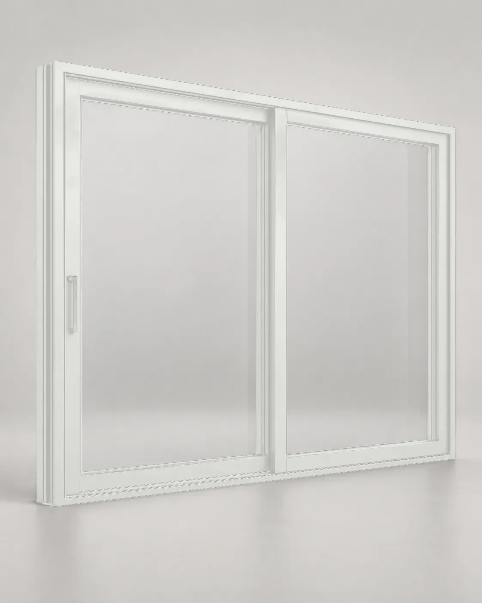
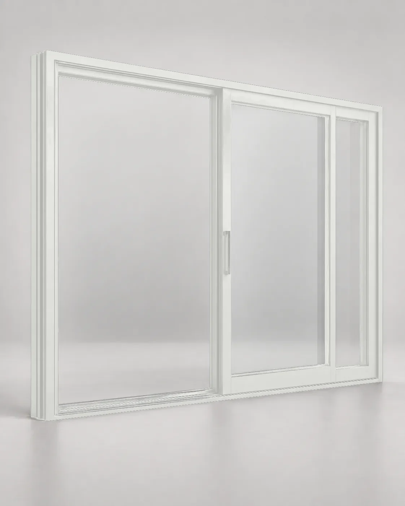
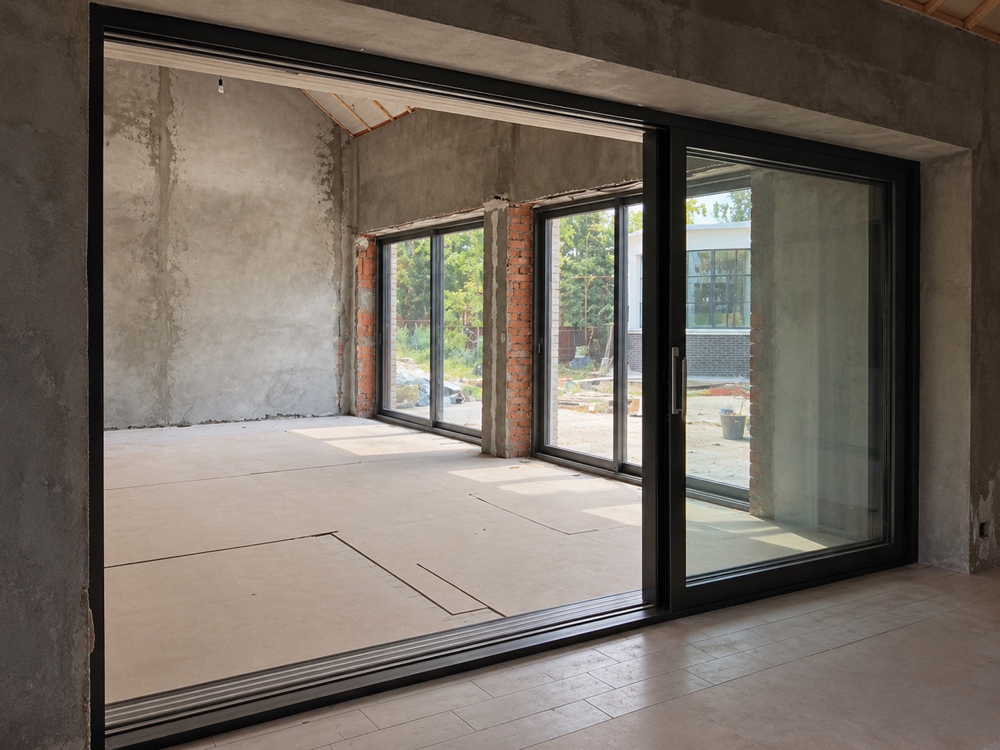

Конфигурация обновляется2 секции · 3000 × 2300 мм
01 · Конфигурация и спецификация
- Размер
- Конфигурация
- Схема
- Как работает
- Цвет
Инженерная спецификация
Параметры меняются вместе с выбранным числом секций и схемой открывания.
Ширина проёма
Секции
Схема
Чистый проход
СистемаПодъёмно-сдвижная
ПрофильАлюминий · тёплый контур
Секции2, 3, 4 или 6
Высотадо 3 700 мм
Глубина рамы
Стеклопакет
Ширина створки
Статус
На объектах
Смотреть в интерьере
Как подъёмно-сдвижной портал работает в тёплом контуре и выглядит на этапе установки.


Как выбрать
Панорама, тепло и лёгкое открывание
HS-портал подходит для тёплого выхода из гостиной на террасу, панорамного фасада и широких проёмов. Створка приподнимается и плавно сдвигается вдоль направляющей.
Введите фактический размер проёма: система сама оставит только допустимое число секций и схемы, рассчитает ориентировочный проход, стоимость и срок изготовления.
Подробнее о системе →Проверка инженером
Нужен сложный проём или монтажный узел?
Пришлите размеры или проект. Проверим вес створок, стеклопакет, порог, водоотвод и подготовим точную смету.